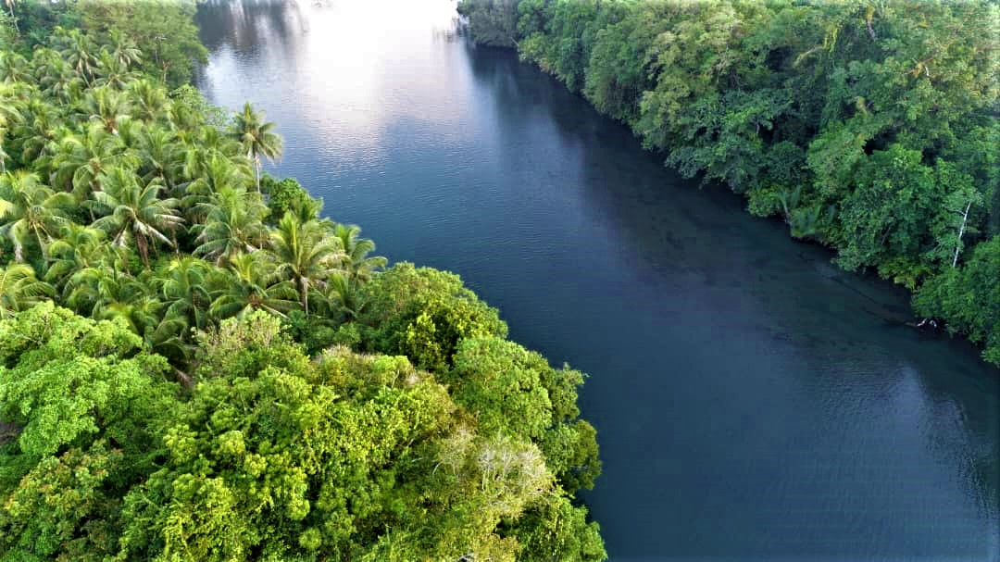
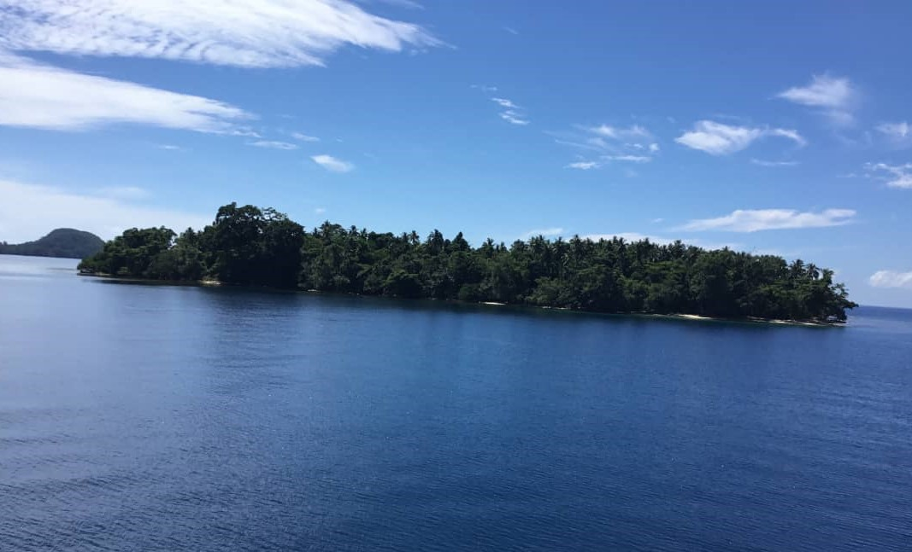

The Rainforest & Wildlife
A mosaic of habitats - home to species found nowhere else on Earth.
Discover Wildlife ExperiencesRainforest Ecosystems of Tavolo
The Tavolo Wildlife Management Area protects one of Papua New Guinea's most biodiverse rainforests. Multiple distinct ecosystems support thousands of plant and animal species, many found nowhere else on the planet.
Lowland Rainforest - The Heart of Biodiversity
The lowland rainforests of Tavolo are among the most biodiverse terrestrial ecosystems on Earth. These complex, multi-layered forests support an extraordinary richness of wildlife adapted to specific forest layers and microhabitats.
Forest Structure & Layers:
- Emergent Layer: Ancient giant trees towering above the canopy, reaching heights of 50+ meters, creating perches for raptors and flying foxes
- Canopy Layer: Dense mesh of tree crowns where most sunlight is captured and where monkeys, birds, and tree-dwelling animals thrive
- Understory: Shaded layer beneath the canopy providing shelter for birds, small mammals, and specialized plants adapted to low light
- Forest Floor: Nutrient-rich soil layer teeming with decomposers, insects, amphibians, and hidden mammal populations
Each layer supports distinct communities of plants and animals, creating a forest structure of remarkable complexity. Small disturbances can cascade through these interconnected systems, making forest protection essential.
Signature Wildlife - Birds of Paradise & Endemic Species
Tavolo's rainforests are home to some of the world's most spectacular wildlife, including multiple species found nowhere else on Earth. These endemic and near-endemic species make the region one of global biodiversity hotspots.

Iconic Tavolo Wildlife:
- Birds of Paradise: Multiple species of these remarkable birds, renowned for their elaborate courtship displays and iridescent plumage, are found only in New Guinea forests
- Tree Kangaroos: Unique marsupials adapted to arboreal life, these endangered animals are found only in specific forest regions of New Guinea and Australia
- Cassowaries: Large flightless birds that play crucial roles as seed dispersers in the rainforest, maintaining forest regeneration
- Flying Dragons: Gliding reptiles that soar between trees, representing remarkable evolutionary adaptations to forest life
- Cuscuses & Possums: Night-active marsupials and other tree-dwellers supporting nocturnal wildlife communities
- Lorikeets & Parrots: Colorful and vocal birds specialized for feeding on rainforest flowers and fruits
Each species plays specific ecological roles - pollinators, seed dispersers, and predators - maintaining the complex web of forest interactions.
Mammal Diversity & Nocturnal Communities
While the daytime forest is alive with birds and insects, the night brings an entirely different community of mammals to active. Tavolo's mammal diversity reflects millions of years of evolution in isolated island rainforests.
Major Mammal Groups:
- Bats: Over 50 species ranging from tiny insectivorous bats to large flying foxes crucial for pollinating forest flowers and dispersing seeds
- Rodents: Diverse endemic rodent species adapted to specific forest niches and microhabitats
- Marsupials: Tree kangaroos, cuscuses, and possums representing unique evolutionary lineages found only in Australasia
- Carnivores: Including quolls and other small predators that regulate prey populations and maintain ecological balance
- Primates: While PNG lacks apes, several macropod species occupy primate-like ecological niches
Night walks with experienced guides offer rare opportunities to observe these nocturnal animals, revealing the forest's hidden dimension of activity and adaptation.

Insects, Amphibians & Invertebrate Diversity
The overwhelming majority of rainforest biodiversity is comprised of insects and invertebrates. Tavolo's arthropod diversity is truly staggering, with thousands of species awaiting scientific description.
Amazingly Diverse Invertebrate Communities:
- Insects: Beetles, butterflies, moths, ants, and countless other insects representing the vast majority of rainforest biodiversity
- Amphibians: Frogs and other amphibians with diverse breeding strategies and remarkable adaptations to rainforest microhabitats
- Reptiles: Snakes, lizards, and geckos occupying diverse ecological niches from soil to canopy
- Arachnids: Spiders and scorpions displaying remarkable hunting strategies and camouflage adaptations
- Crustaceans: Freshwater shrimp and crayfish in rainforest streams and water bodies
These invertebrates perform critical ecosystem services including pollination, decomposition, nutrient cycling, and predation that maintain forest health. Many rainforest plants depend entirely on specific insect pollinators that may exist nowhere else.
Plant Diversity & Forest Pharmacology
The Tavolo rainforest supports phenomenal plant diversity - from massive emergent trees to delicate orchids, from giant ferns to microscopic mosses. This botanical richness provides not only shelter for animals but also represents a living pharmaceutical library.
Key Plant Groups:
- Medicinal Plants: Traditional Lote healers identify dozens of plant species with therapeutic properties; modern pharmaceutical research continues to discover new compounds in rainforest plants
- Orchids: PNG orchid diversity is extraordinary, with hundreds of species adapted to specific forest niches and microhabitats
- Fruit & Nut Trees: Providing critical food sources for wildlife and supporting complex networks of frugivorous species
- Pioneer Species: Fast-growing plants vital for forest regeneration following natural disturbances
- Epiphytes: Plants growing on trees without parasitizing them, creating aerial gardens in forest canopies
Approximately 25% of modern pharmaceutical drugs originate from rainforest plants. The Tavolo rainforest likely contains undiscovered compounds with potential medical applications, underscoring the importance of conservation.

Freshwater Ecosystems & Stream Communities
Beyond the terrestrial forest, Tavolo's rainforest streams and rivers support distinct aquatic ecosystems. These freshwater habitats connect the forest network and provide critical resources for both terrestrial and aquatic species.

Stream & River Biodiversity:
- Fish Species: Endemic and migratory fish species adapted to flowing freshwater systems
- Aquatic Invertebrates: Dragonflies, mayflies, caddisflies, and other invertebrates form the basis of stream food webs
- Freshwater Mammals: Including water-dependent species such as certain rodents and hunting mammals
- Riparian Plants: Specialized vegetation along stream banks stabilizing soil and providing food for aquatic organisms
- Water Quality Indicators: Sensitive species that reveal forest ecosystem health and integrity
Forest protection directly protects water sources for downstream communities and supports the complex freshwater food webs upon which many rainforest animals depend.
Rainforest Under Threat
Despite their ecological importance, rainforets like Tavolo face relentless pressure from deforestation. Commercial logging, agricultural expansion, and mining threaten these irreplaceable ecosystems. Once lost, the species and ecological functions of a rainforest cannot be recovered.
Tavolo's conservation approach protects this rainforest precisely because it demonstrates rainforests have greater economic value alive than cleared - through carbon storage, biodiversity conservation, and sustainable tourism revenue that provides legitimate alternatives to extractive industries.